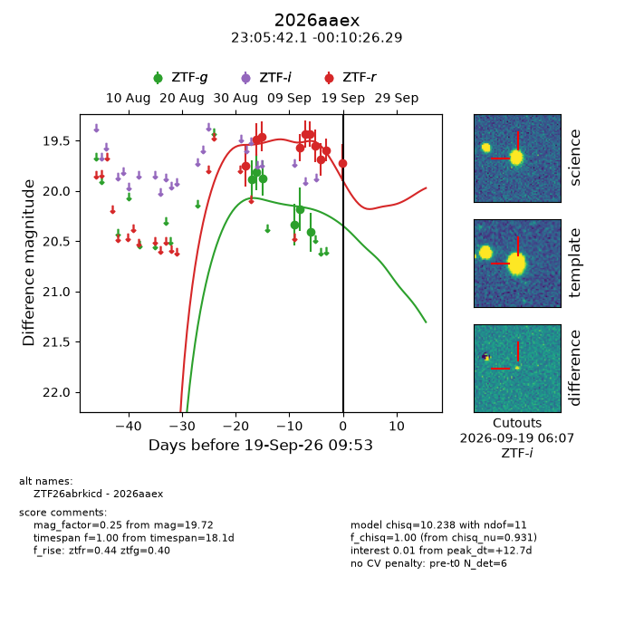
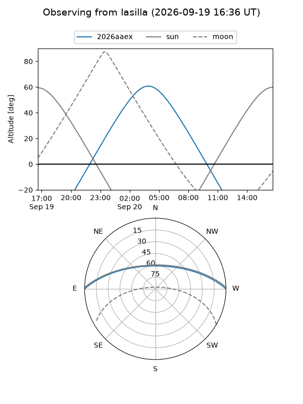
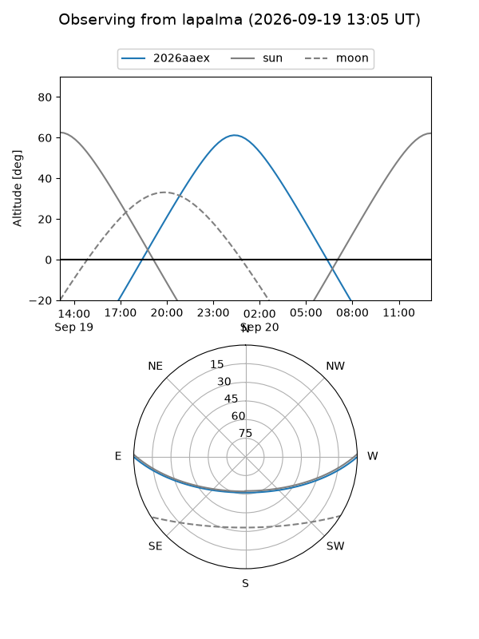
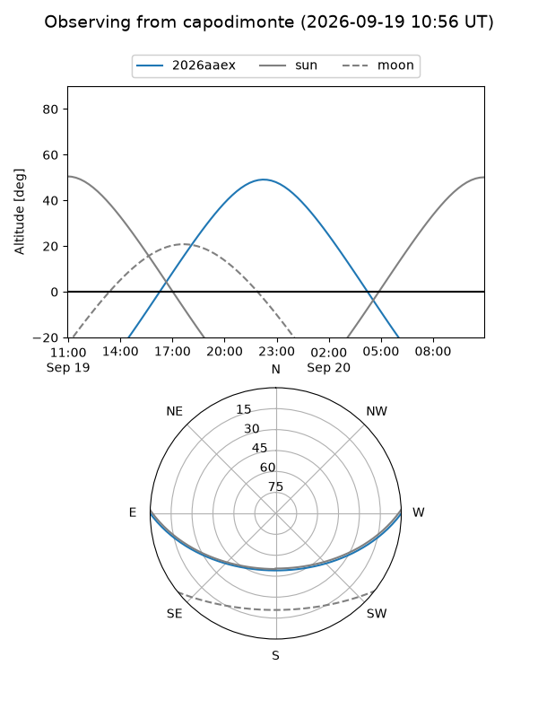
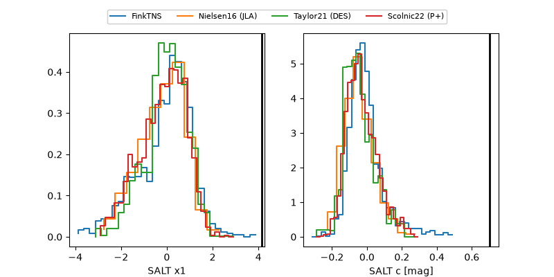

2026aaex
Target 2026aaex at 2026-09-19 09:55
Aliases and brokers:
FINK-ZTF: ztf.fink-portal.org/ZTF26abrkicd
Lasair-ZTF: lasair-ztf.lsst.ac.uk/objects/ZTF26abrkicd
ALeRCE-ZTF: alerce.online/object/ZTF26abrkicd
YSE-PZ: ziggy.ucolick.org/yse/transient_detail/2026aaex
TNS name: wis-tns.org/object/2026aaex
Direct TNS query: direct search
alt names
ZTF26abrkicd (ztf,fink_ztf)
2026aaex (tns,yse)
Coordinates:
equatorial (ra, dec) = 346.4253,-0.17397
equatorial (HMS+DMS) = 23:05:42.08,-00:10:26.29
galactic (l, b) = (75.2695,-52.96976)
Flags:
TNS type: nan
peak dt: +12.7
Photometry:
last ztfg=20.41, ztfr=19.72
6 ztfg, 10 ztfr detections
Lightcurve

Visibility



Additional plots
